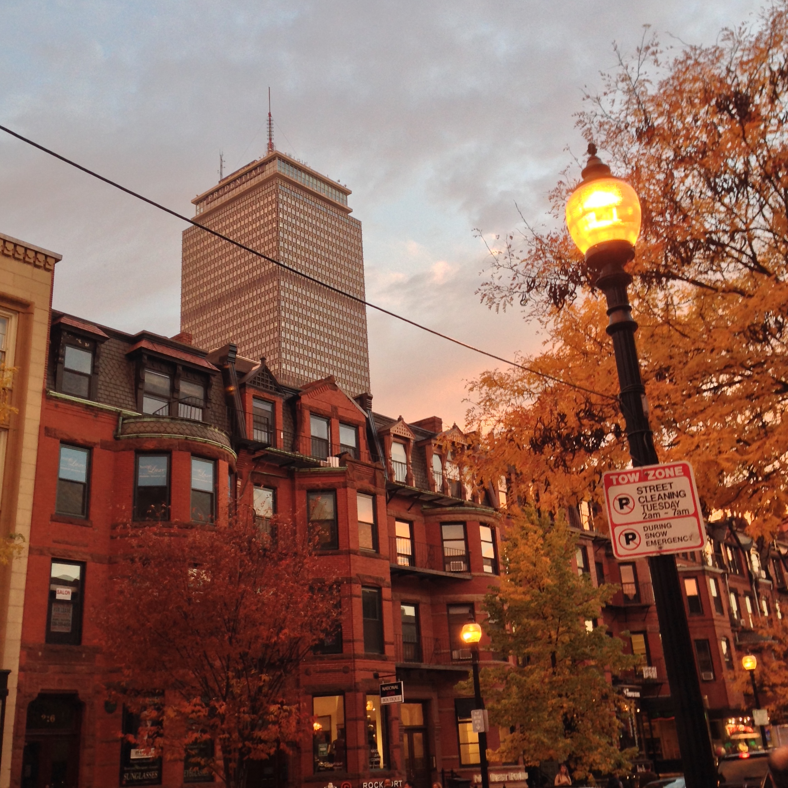

Here’s a photo of my mom, headed off to prom - she made the dress she’s wearing by hand, an airy chiffon number, the seams tearing after 30 years of storage when I try to wear it now. My mom always made our halloween costumes, birthday cakes, decorations, and invitations, too - she encouraged craftiness and creativity for as long as I can remember. All these birthdays, halloween kick off parties (heavily influenced by the martha stuart magazine halloween edition), and movie nights hosted were here, at our house on Greenough park. I, of course, took my own prom photos in front of the same azalea tree.
Maybe I talk about my mom a lot, but I realize how appreciative I should’ve been - my friends who have met her when she came to visit will ask how she’s doing - and I realize their mom’s haven’t necessarily been so forgiving, understanding, or cool. Cool enough to hang out with me and my roommates, and make us chicken soup, or make everyone a gin and tonic and hear about our lives, as if she hasn’t grown up at all. It’s incredible that she had me at such a young age, just a few years older than I am today - and how she has always done her best to provide a safe, understanding, and comfortable home.
Hollow Reed school was where I started my education. A pre kindergarten for local kids, this is where we’d watch Gulliver’s Travels in the sunroom, learn songs, yoga, and how to harness our imaginations. I made a lot of friends who I’d go on to elementary and middle school with, some who I am still in contact with. This is where I was first described as an “empath” by one of my teachers, a descriptor that would stick with me. We would climb the low trees in the playground across the street, and bury acorns to hope one day they’d grow.
This is where my friends and I would hang out in the summers, when it was too hot to be indoors. The summer in Boston can be excruciatingly hot, humid, and in my mom’s old house the electricity could barely support one air conditioner. We’re lucky that my grandmother bought this house when the neighborhood was still bad, and it was still cheap; today it would cost a small fortune - either way, it’s a lot to keep up - a three story Victorian, five bedrooms, three bathrooms, and a basement prone to flooding. It’s nestled into a dead end street, surrounded by houses similar to ours, some inhabited by my mom’s lifelong neighbors, others inhabited by newer families, with siblings the same age as me and my sister.
A few streets over from my house, off of Centre Street, the main hub of Jamaica Plain, full of locally owned restaurants, thrift shops, (more recently juiceries, chocolatiers, and even a cycling studio), there’s a little community garden with a bit of shade, and a couple of benches. The gate was often locked, probably to prevent kids like us from loitering there, but it was low enough to hop over. Pictured here are Lito, Maggie, and me, photo was taken by my life long friend Al Spruill, who I met in middle school when we were mutual frenemies. Fast forward to today, and the friend we’d fight over is long gone, somewhere doing something else with other people - but Al and I remain fast friends, facetiming as often as possible, time difference accounted for. I spent a lot of good times running around the city, photographing and being photographed with Al, so we don’t have many pictures together.
You can take the 39 bus downtown and get dropped off right by Newbury Street - this is one of the more touristy parts of the city, but it’s where we’d go to shop, or hope not to see people we knew, or hope to see people we knew, depending on how good our outfits were. Al has worked at the Doc Martens store on newbury for years, letting me use her 50% friends and family discount at least once a year since - I would have far fewer shoes if it weren’t for this. Newbury also happens to be right near the finish line of the Boston Marathon, and subsequently the Boston Bombing.